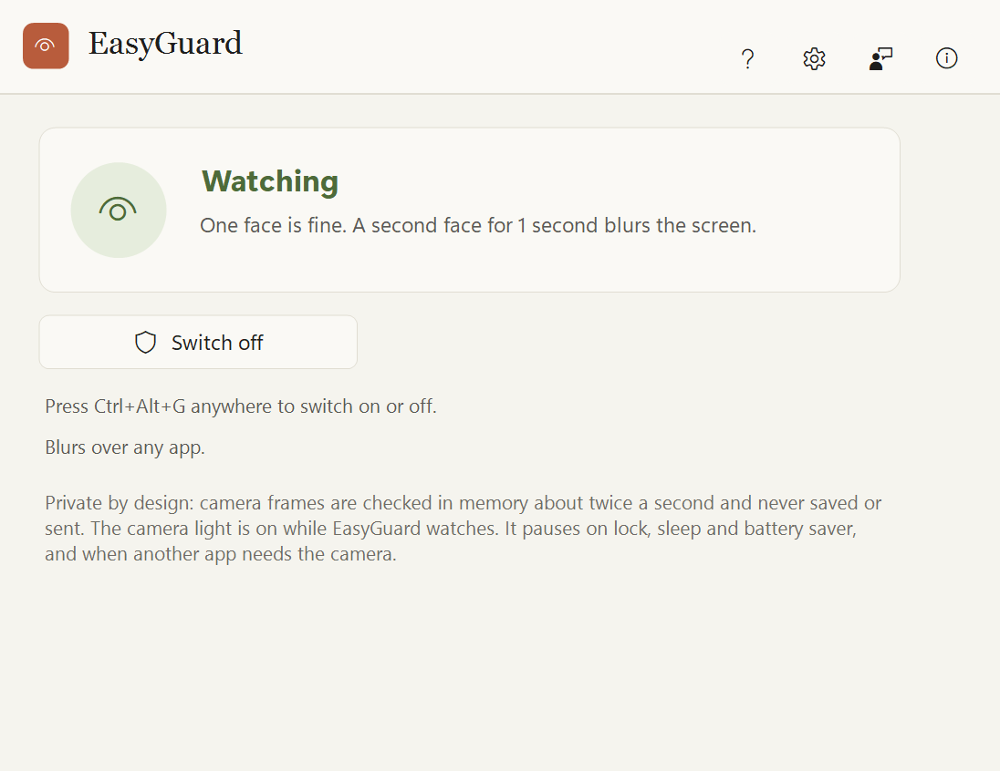
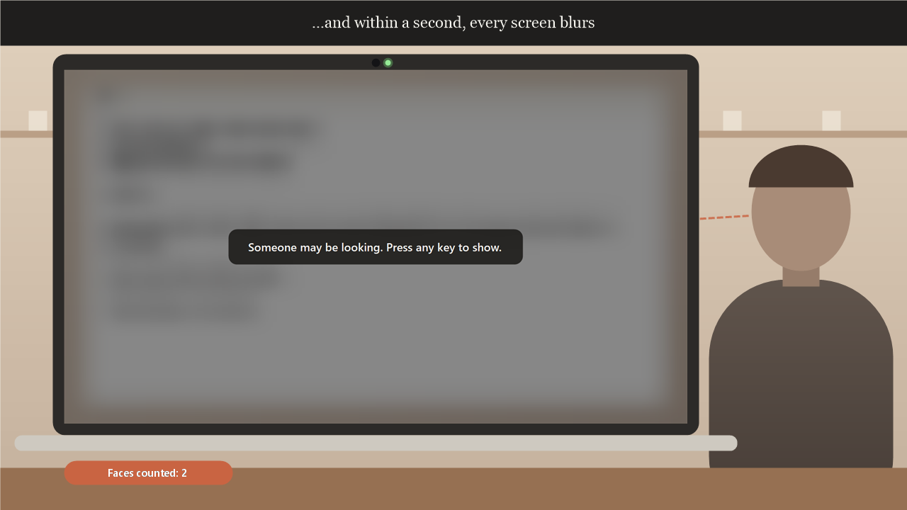
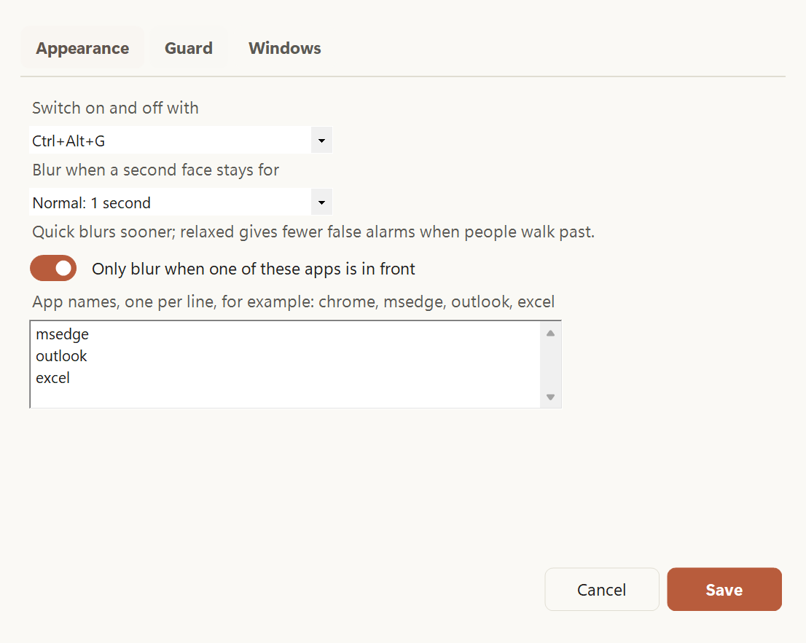

Someone looking over your shoulder? The screen blurs.
On a train, in a café or at the office, EasyGuard notices when a second face looks at your screen and covers it with a blur. Press any key to bring it back.
Faces are only counted, never recognised. Nothing is saved, ever.
See it work
EasyGuard in 25 seconds
A laptop in a café shows a bank letter. EasyGuard is switched on with Ctrl+Alt+G and counts one face. Someone stops to look over the shoulder, the count goes to two, and the screen blurs with the message: someone may be looking, press any key to show. A key brings it back. Then the Settings page with apps to guard, and the paused status when another app needs the camera.



Features
What EasyGuard does
Watches for a second face
One face is you. When another stays in view for about a second, every screen blurs.
Blur, not black
A blurred, darkened copy of your screen, so you know where you were. Any key brings it back.
Only where it matters
Choose apps like your browser or email, so a film never blurs.
Steps aside
It pauses when the screen locks, the PC sleeps, battery saver is on, or a video call needs the camera.
Starts switched off
You choose when it watches, with a button, the tray icon or Ctrl+Alt+G.
Camera light on
The camera light is on while it watches, so you always know.
How it works
Three steps
Switch it on
Press Ctrl+Alt+G or the big button. The camera light comes on.
Carry on working
One face is fine. A second one that stays blurs the screen.
Press any key
The screen comes back. Switch it off the same way.
Handy keys
Private by design
Like every Easy Suite app: no account, no internet needed, no tracking.
- Camera frames are looked at in memory, one at a time, and dropped straight away.
- Faces are only counted by Windows' own offline detector. Nobody is recognised.
- Nothing is saved, copied or sent. Settings hold only your choices.
- No network access and no telemetry.
- Found a problem or have an idea? Feedback is one click away inside the app: it opens a short form in your browser, and the app itself sends nothing.
Download
Get EasyGuard
Free to use for your own personal or work use. Installs for your Windows account only, no administrator rights needed.
Download the installer (36 MB)
- Version
- 1.0.0
- Needs
- Windows 10 (version 2004 or later) or Windows 11, 64-bit, with a webcam (built in or plugged in).
- SHA-256
4df03bd1d970729fe9e53db6677c0c0cbf69fe88533181500e72b29050882bd2- Check it
- In PowerShell,
Get-FileHash .\EasyGuard-Setup-win-x64.exemust show exactly this SHA-256. If it doesn't, don't run the file. - Terms
- Licence agreement (you accept it during setup)
- Release notes
- EasyGuard 1.0.0
Installing
EasyGuard is new and made by one person, so Windows may be cautious about it at first. This is normal.
- If your browser says the file is not commonly downloaded, choose Keep.
- Right-click the downloaded file, choose Properties, tick Unblock and click OK. If there is no Unblock box, skip this.
- Double-click it. If you see "Windows protected your PC", click More info, then Run anyway.
- Accept the licence agreement and follow the steps.
A note from the developer
Thank you for trying EasyGuard! I made it for trains, cafés and open offices, where a screen is never really private. I hope it lets you work without glancing over your shoulder.
Aalok L, maker of EasyGuard